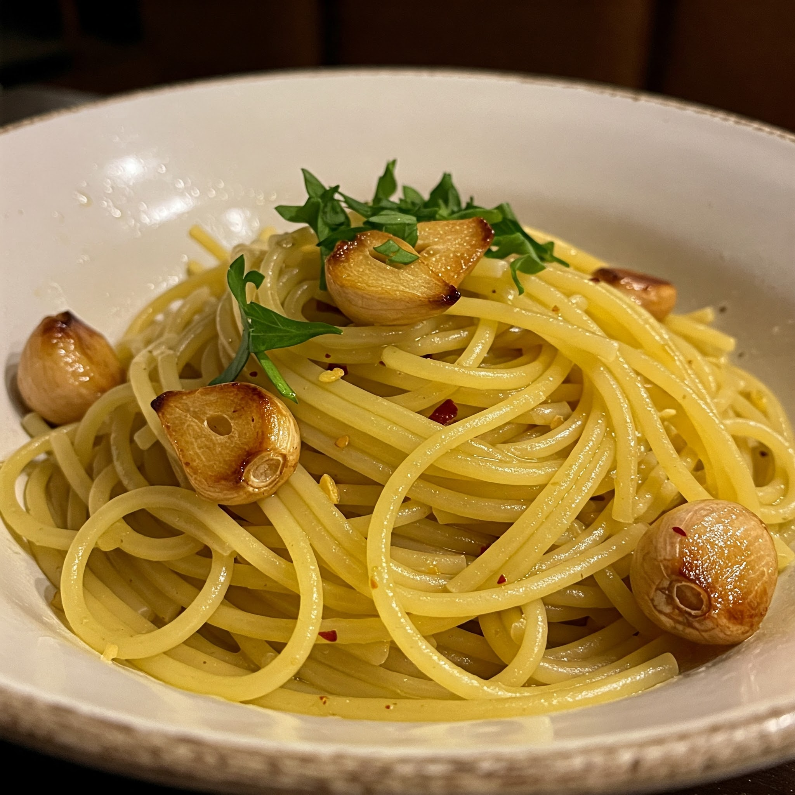

Spaghetti Aglio e Olio
Ingredients
- 200g spaghetti
- 4–5 cloves garlic (thinly sliced)
- 1/4 cup olive oil
- 1 tsp red chilli flakes
- Fresh parsley (chopped)
- Salt to taste
- Grated parmesan cheese (optional)
Steps
- Boil spaghetti in salted water until al dente. Reserve 1/4 cup pasta water, then drain.
- Heat olive oil in a pan and sauté sliced garlic until golden (not burnt).
- Add chilli flakes and stir for a few seconds.
- Add the cooked spaghetti and toss well.
- Pour in reserved pasta water to loosen up if needed.
- Mix in chopped parsley and check seasoning.
- Top with parmesan if using. Serve hot!